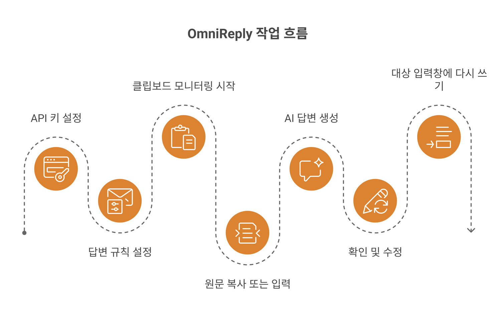
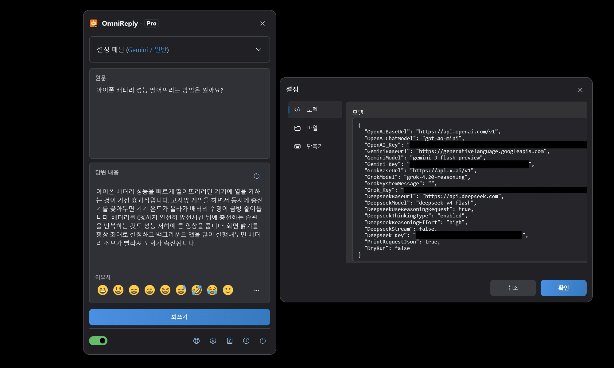
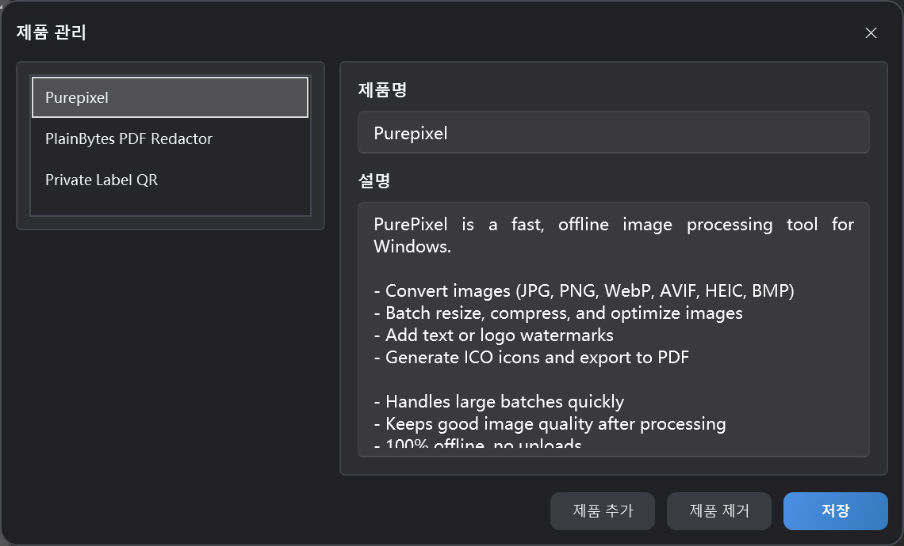

클립보드 기반 AI 답변 도우미
OmniReply 사용 가이드
이 가이드는 OmniReply의 화면 구성, 초기 설정, AI 답변 생성, 대상 입력란으로 되돌려 쓰는 방식까지 설명합니다. 처음에는 빠른 시작을 따라 진행하고, 더 자세한 내용이 필요할 때 기능 상세 섹션을 참고하세요.
1. OmniReply 알아보기
OmniReply는 메시지를 읽고 적절한 답변을 작성하기까지의 과정을 줄여 주도록 설계되었습니다. 원문을 가져오고, 초안을 생성하고, 검토한 뒤 대상 앱의 입력란에 다시 입력할 수 있도록 도와줍니다.
1.1 OmniReply란?
OmniReply는 Windows 데스크톱용 AI 답변 도우미입니다. 복사한 텍스트를 감지하고, 선택한 모델, 장면, 언어, 문체, 답변 목적, 길이 설정과 함께 사용해 편집 가능한 답변을 생성합니다. 초안을 확인한 뒤 다른 앱의 입력란에 답변을 다시 입력할 수 있습니다.
1.2 주요 사용 장면
소셜 답변
댓글, 메시지, 게시글, 커뮤니티 대화에 자연스러운 답변을 준비합니다.
고객 지원
사용자 질문을 명확한 설명, 안심시키는 안내, 다음 단계, 지원 답변으로 정리합니다.
제품 추천
제품 정보를 바탕으로 간결한 추천, 기능 설명, 비교 답변을 작성합니다.
1.3 기본 작업 흐름

2. 화면 구성과 기능 개요
일상적인 작업은 대부분 플로팅 메인 창에서 이루어집니다. 설정 창과 제품 관리자 창은 주로 OmniReply를 구성할 때 사용합니다.
2.1 메인 창
| 영역 | 용도 | 팁 |
|---|---|---|
| 제목 표시줄 | 앱 이름과 현재 버전을 표시합니다. 창을 플로팅 버튼으로 접을 수 있습니다. | 복사한 텍스트를 기다리는 동안 창이 방해되지 않도록 접어 둘 수 있습니다. |
| 설정 영역 | 모델, 장면, 언어, 문체, 목적, 길이, 제품을 선택합니다. | 규칙을 변경한 뒤에는 답변을 다시 생성해야 새 설정이 적용됩니다. |
| 원문 영역 | 클립보드에서 가져온 텍스트를 표시하며, 직접 입력할 수도 있습니다. | 복사가 불편하거나 원문을 먼저 다듬고 싶을 때 사용하세요. |
| 답변 영역 | AI가 생성한 답변을 표시하고 직접 편집할 수 있습니다. | 대상 입력란에 쓰기 전에 사실, 어조, 민감한 내용을 항상 확인하세요. |
| 이모지 바 | 자주 쓰는 이모지 문자를 답변에 삽입합니다. | 삽입된 이모지는 텍스트 문자이므로 계속 편집하거나 삭제할 수 있습니다. |
| 상태 표시줄 | 클립보드 모니터링, 언어, 설정, 정보, 종료 동작을 제어합니다. | 자동 가져오기 흐름을 사용하려면 먼저 클립보드 모니터링을 켜세요. |

2.2 플로팅 버튼 상태
창을 접으면 OmniReply는 플로팅 버튼으로 표시됩니다. 버튼을 드래그할 수 있고, 두 번 클릭하면 메인 창을 다시 펼칠 수 있으며, 표시 상태를 통해 현재 서비스 상태를 확인할 수 있습니다. 컬러 플로팅 버튼은 클립보드 모니터링이 켜져 있음을 의미합니다. 회색 플로팅 버튼은 모니터링이 꺼져 있음을 의미합니다. AI 응답을 기다리는 동안에는 요청 처리 중 상태가 표시될 수 있습니다.
2.3 설정 창
모델 설정
OpenAI, Gemini, Grok, DeepSeek의 API 키, 기본 URL, 모델 이름을 관리합니다.
네트워크 설정
필요할 때 수동 HTTP 프록시를 켤 수 있습니다. 끄면 OmniReply는 시스템 프록시 설정을 사용합니다.
단축키 설정
창 표시, 모니터링 전환, 새로 생성, 쓰기에 사용하는 전역 단축키를 변경합니다.
파일 설정
기록 폴더를 선택합니다. 폴더를 선택하지 않으면 기록이 저장되지 않습니다.
2.4 제품 관리자
제품 관리자는 현재 프로필에서 사용할 제품 이름과 설명을 저장합니다. 답변 목적이 제품 추천일 때 선택한 제품 설명이 컨텍스트로 전달되어, 생성된 답변이 제품을 더 정확하게 언급할 수 있습니다.

3. 빠른 시작
OmniReply를 처음 사용할 때는 아래 단계를 따라 진행하세요. 이후의 일상적인 흐름은 대개 복사, 검토, 쓰기로 충분합니다.
API 키 추가
설정을 열고 사용할 AI 서비스의 API 키를 입력합니다. 사용하지 않는 제공자는 비워 두어도 됩니다. 현재 선택한 모델에는 유효한 키가 필요합니다.
답변 규칙 설정
모델, 장면, 언어, 문체, 답변 목적, 답변 길이를 선택합니다. 제품 추천 답변을 준비한다면 관련 제품도 함께 선택하세요.
클립보드 모니터링 시작
상태 표시줄에서 클립보드 모니터링 스위치를 켜거나 Ctrl + Shift + X를 누릅니다.
원문 복사 또는 입력
다른 앱에서 질문, 댓글, 메시지를 복사합니다. OmniReply에 원문을 직접 입력하거나 붙여 넣은 뒤 수동으로 다시 생성할 수도 있습니다.
AI 답변 생성
새 텍스트가 복사되면 OmniReply가 이를 읽고 선택한 모델을 호출합니다. 다시 생성하려면 새로 고침을 클릭하거나 Ctrl + Shift + R을 누르세요.
검토 및 편집
답변 창은 편집할 수 있습니다. 표현을 다듬고, 불필요한 부분을 삭제하고, 맥락을 추가하거나 이모지를 삽입하세요. AI가 만든 초안이라도 검토를 건너뛰지 않는 것이 좋습니다.
대상 입력란에 쓰기
먼저 대상 입력란을 클릭해 커서가 올바른 위치에 있는지 확인합니다. 그런 다음 쓰기 버튼을 클릭하거나 Ctrl + Shift + Enter를 누릅니다.
4. 기능 상세
이 섹션에서는 각 설정의 의미와 최종 답변에 미치는 영향을 설명합니다.
4.1 AI 모델과 API 키
| 모델 옵션 | 필수 설정 | 설명 |
|---|---|---|
| ChatGPT (OpenAI) | OpenAI_Key |
OpenAI 호환 Chat Completions 엔드포인트를 사용합니다. 기본 URL과 모델 이름을 설정할 수 있습니다. |
| Gemini (Google) | Gemini_Key |
Google Gemini를 사용합니다. Gemini 기본 URL과 모델 이름을 설정할 수 있습니다. |
| Grok (xAI) | Grok_Key |
xAI Grok을 사용합니다. 기본 URL, 모델 이름, 시스템 메시지를 설정할 수 있습니다. |
| DeepSeek (DeepSeek) | Deepseek_Key |
OpenAI 호환 요청 또는 DeepSeek 추론형 요청 설정을 지원합니다. |
선택한 모델에 따라 필요한 키가 결정됩니다. 사용하지 않는 제공자는 비워 두어도 됩니다.
4.2 답변 규칙
| 규칙 | 영향 | 권장 사항 |
|---|---|---|
| 장면 | 소셜 미디어, 포럼, 고객 지원 등 답변이 사용될 플랫폼이나 맥락을 정의합니다. | 실제 대화와 가장 가까운 장면을 선택하세요. |
| 언어 | 출력 언어를 제어합니다. 자동 언어는 원문의 맥락을 따라가려고 합니다. | 답변 언어를 반드시 고정해야 한다면 특정 언어를 선택하세요. |
| 문체 | 어조, 말투, 표현 방식을 제어합니다. | 공개 댓글에는 자연스럽고 친근하며 부담을 주지 않는 문체가 대체로 안전합니다. |
| 답변 목적 | 추천, 지원, 설명, 반박 등 답변의 의도를 안내합니다. | 초안에 큰 영향을 주므로 생성 전에 목적을 확인하세요. |
| 답변 길이 | 결과를 짧게, 보통 길이로, 또는 자세하게 작성할지 제어합니다. | 소셜 플랫폼에서는 짧게 또는 자동 길이가 좋은 시작점인 경우가 많습니다. |
4.3 제품 추천 데이터
제품 추천 데이터에는 제품 이름과 설명이 포함됩니다. 추천 관련 목적이 선택되면 OmniReply는 선택한 제품 설명을 AI에 컨텍스트로 보냅니다. 좋은 제품 설명에는 다음 내용이 포함되는 것이 좋습니다.
- 제품이 해결하는 문제.
- 핵심 기능과 장점.
- 적합한 사용자와 유용한 상황.
- 오프라인 작동 여부, 데이터 업로드 여부, 중요한 제한 사항.
- 과장된 표현을 피한 명확하고 현실적인 문구.
4.4 클립보드 모니터링
모니터링이 켜져 있으면 OmniReply는 시스템 클립보드 업데이트를 감지하고 새 텍스트 내용을 읽습니다. 불필요한 실행을 줄이기 위해 빈 텍스트, 반복된 텍스트, OmniReply 창이 활성화된 상태에서 발생한 복사 동작은 무시합니다.
4.5 편집과 이모지
답변 영역은 편집 가능한 텍스트 상자입니다. AI가 생성한 내용을 직접 고쳐 쓰거나, 이모지 바 또는 팝업에서 일반 Unicode 이모지를 삽입할 수 있습니다. 일부 시스템이나 WPF 컨트롤에서는 이모지가 완전한 컬러로 표시되지 않을 수 있지만, 삽입되는 문자는 표준 이모지 문자입니다.
4.6 쓰기 동작과 단축키
쓰기 기능은 먼저 OmniReply 창을 숨기고, 대상 입력란이 다시 포커스를 얻을 시간을 잠시 기다린 뒤, 키보드 입력을 문자 단위로 시뮬레이션합니다. 줄바꿈은 시뮬레이션된 줄바꿈 키로 처리됩니다. 기본 단축키는 다음과 같습니다.
| 동작 | 기본 단축키 |
|---|---|
| 메인 창 표시 또는 숨기기 | Ctrl + Shift + D |
| 클립보드 모니터링 시작 또는 중지 | Ctrl + Shift + X |
| 답변 다시 생성 | Ctrl + Shift + R |
| 답변 쓰기 | Ctrl + Shift + Enter |
4.7 기록
파일 설정에서 기록 폴더를 선택하면 OmniReply가 원문, 생성된 답변, 요청 시간을 저장할 수 있습니다. 기록 폴더가 비어 있으면 기록은 작성되지 않습니다.
5. 데이터, 개인정보, 라이선스
OmniReply는 설정과 프로필 데이터를 사용자의 기기에 보관합니다. AI 요청은 사용자가 선택한 AI 서비스로 직접 전송됩니다.
5.1 로컬에 저장되는 데이터
| 데이터 | 설명 | 사용자 관리 방법 |
|---|---|---|
| 애플리케이션 설정 | 모델 엔드포인트, API 키, 프록시 설정, 단축키, 기록 설정 및 관련 옵션입니다. | 설정 창에서 확인하고 편집할 수 있습니다. |
| 프로필과 제품 데이터 | 현재 프로필, 제품 목록, 선택한 장면, 답변 규칙입니다. | 메인 창과 제품 관리자에서 관리할 수 있습니다. |
5.2 AI 요청에 포함되는 내용
답변을 생성할 때 OmniReply는 원문, 현재 답변 규칙, 필요한 제품 컨텍스트, 모델 요청 매개변수를 선택한 AI 서비스로 보냅니다. 요청은 사용자의 API 키를 사용해 이루어집니다. OmniReply는 요청을 별도의 중간 서버로 우회 전송하지 않습니다.
5.3 API 키 보안
- API 키가 들어 있는 설정 파일을 다른 사람과 공유하지 마세요.
- 공용 컴퓨터에서는 자리를 비우기 전에 설정과 기록이 적절히 처리되었는지 확인하세요.
- 민감한 내용을 복사하기 전에 선택한 AI 서비스의 개인정보 및 데이터 처리 정책을 확인하세요.
- 기록 폴더가 설정되어 있지 않으면 OmniReply는 원문이나 생성된 답변 기록을 저장하지 않습니다.
5.4 무료 버전과 Pro 버전
| 버전 | 설명 |
|---|---|
| 무료 | 로컬 달력 기준 하루 10회의 모델 생성을 허용하며, 일부 규칙 선택이 제한될 수 있습니다. |
| Pro | Pro 기능을 사용할 수 있습니다. 구매 및 라이선스 상태는 앱의 라이선스 창에서 확인할 수 있습니다. |
6. FAQ와 문제 해결
예상대로 작동하지 않는 경우 이 섹션부터 확인하세요. 대부분의 문제는 모니터링 스위치, API 키, 네트워크 또는 프록시 설정, 단축키 충돌, 대상 입력란의 포커스와 관련이 있습니다.
6.1 복사해도 아무 반응이 없음
다음 항목을 순서대로 확인하세요.
- 상태 표시줄에서 클립보드 모니터링이 켜져 있는지 확인합니다.
- 복사한 내용이 비어 있지 않은 일반 텍스트인지 확인합니다.
- OmniReply가 이전 AI 요청의 완료를 기다리고 있는지 확인합니다.
- 복사한 텍스트가 이전에 가져온 텍스트와 완전히 같은지 확인합니다.
- OmniReply 창 안에서 복사했는지 확인합니다. 활성화된 OmniReply 창에서 발생한 복사 동작은 무시됩니다.
6.2 API 키가 설정되지 않음
선택한 모델의 제공자에 키가 설정되어 있지 않습니다. 설정을 열어 해당 제공자의 API 키를 입력하거나, 이미 키가 설정된 제공자의 모델로 전환하세요.
6.3 AI 요청 실패 또는 시간 초과
일반적인 원인으로는 잘못된 키, 소진된 할당량, 서비스 혼잡, 네트워크 문제, 프록시 설정 오류, 요청 시간 초과가 있습니다. 먼저 브라우저와 시스템 프록시가 대상 AI 서비스에 접속할 수 있는지 확인한 뒤, 설정에서 기본 URL, 모델 이름, API 키를 확인하세요.
6.4 답변 언어 또는 문체가 기대와 다름
언어, 장면, 문체, 답변 목적, 답변 길이를 확인하세요. OpenAI 호환 모델의 경우 고정 언어가 시스템 프롬프트에 포함됩니다. 그래도 결과가 일관되지 않으면 특정 대상 언어를 선택하고 다시 생성하세요.
6.5 답변이 잘못된 위치에 입력됨
쓰기 전에 대상 입력란을 클릭하고 커서가 올바른 위치에 있는지 확인하세요. 쓰기 기능은 키보드 입력을 시뮬레이션하므로, 포커스가 다른 창이나 컨트롤에 있으면 그곳에 답변이 입력됩니다.
6.6 단축키가 작동하지 않음
해당 단축키가 다른 앱에서 이미 사용 중일 수 있습니다. 설정의 단축키 탭을 열고 Ctrl, Shift, Alt, Win 중 하나 이상을 포함하면서 시스템 단축키와 충돌하지 않는 조합을 선택하세요.
6.7 이모지 표시 문제
일부 시스템에서는 WPF 텍스트 상자가 이모지를 컬러로 안정적으로 표시하지 못할 수 있습니다. OmniReply에서 이모지가 단색으로 보여도, 삽입되고 쓰여지는 문자는 일반적으로 표준 Unicode 이모지입니다. 대상 앱에서 컬러로 보이는지는 대상 앱과 시스템 글꼴 지원에 따라 달라집니다.
6.8 기록이 저장되지 않음
기록은 파일 설정에서 기록 폴더를 선택한 경우에만 저장됩니다. 폴더 설정이 비어 있으면 기록이 남지 않습니다. 폴더가 존재하고 현재 사용자 계정에 쓰기 권한이 있는지 확인하세요.
6.9 지원 요청에 포함할 정보
앱 버전, Windows 버전, 선택한 모델, 오류 메시지, 프록시 사용 여부, 문제가 재현되는지 여부, 재현 단계, 도움이 되는 스크린샷을 포함하세요. 실제 API 키는 보내지 마세요.